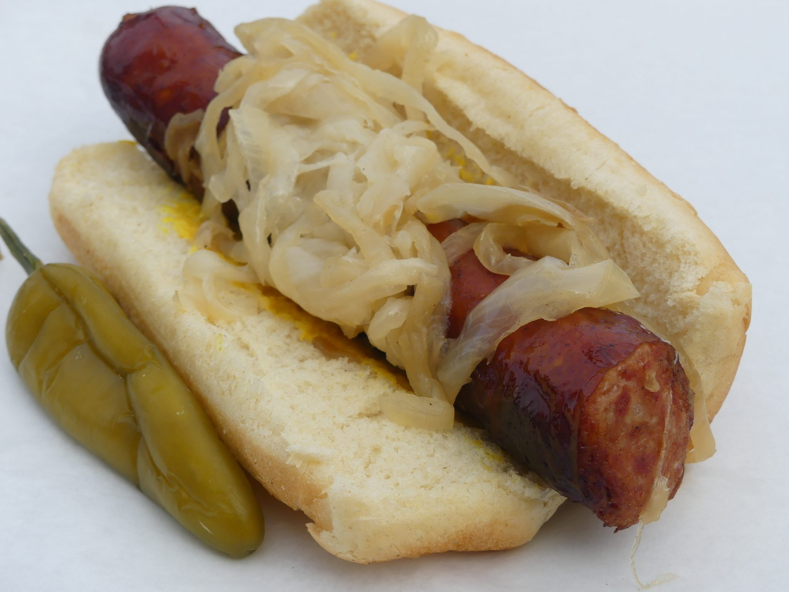

The Maxwell Street Polish sausage sandwich is a classic Chicago staple bursting with
flavor. This iconic sandwich features a juicy, grilled Polish sausage nestled in a
soft bun and topped generously with caramelized onions, yellow mustard, and a touch
of heat from sport peppers. It’s a hearty, no-frills meal, perfect for food lovers
craving bold, comforting street food flavors. Whether you're at a summer barbecue or
recreating Chicago’s legendary street food at home, this sandwich is guaranteed to
delight your taste buds!
Ingredients
For the Sandwich
- 1 Polish sausage
- 1 fresh sausage bun (or hoagie roll)
- 1/2 large yellow onion, thinly sliced
- 1/2 tablespoon unsalted butter
- Yellow mustard (to taste)
- 2 sport peppers (optional, for added heat)
Optional Side
- French fries or potato chips
Equipment
- Grill or grill pan
- Large skillet
- Tongs
- Knife and cutting board
- Spoon for stirring
- Serving plate
Instructions
Prepare the Onions
- In a large skillet, melt butter over medium heat.
- Add the sliced onions and cook until golden brown
and caramelized, about 15-20 minutes. Stir occasionally to avoid burning.
Grill the Sausages
- Heat a grill or grill pan over medium-high heat.
- Place the Polish sausages on the grill, turning
occasionally until they are evenly browned and heated through (about 6-8 minutes).
Toast the Buns (Optional)
- Lightly toast the buns on the grill or in a clean skillet until they
are warm and slightly crispy.
Assemble the Sandwich
- Place a grilled sausage in each bun.
- Top with a generous amount of caramelized onions.
- Drizzle yellow mustard over the onions.
- Add sport peppers for extra spice, if desired.
Serve and Enjoys
- Serve the sandwich immediately with your favorite side
dish, such as fries or chips.
This Maxwell Street Polish sausage sandwich is easy to make and perfect
for casual dinners, picnics, or game-day meals. Its bold flavors and
comforting texture will make it an instant hit with your family and friends!